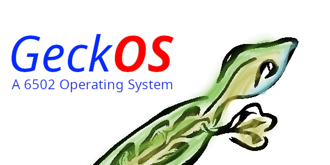

GeckOS/A65 V2.1
(C) 1989-2024 André Fachat
This is my 6502 multitasking operating system GeckOS/A65.
News in version 2.2 are:
- New port: the Commodore C128 can now run GeckOS
- lsh got job control
- NMI-based RS232 esp. for the C64 swiftlink
More details can be found in the RELEASE notes.
News in version 2.1.1 are:
- Adaption to and requirement for xa 2.4.1
News in version 2.1 are:
- An official Logo!
- All documentation is updated and re-written in asciidoc
- Usability updates on various commands and APIs like
ps(1),setinfo(2),ls(1), and pipe filters likehexdump,wc, ormore. - Added first contributed code -
kill(1)by Glenn Holmer! - Grand shell unification.
lsh(1)is now the one and official shell; the old monitor fromshnow becomeslmon(1). - Various improvements in the different ports
Since version 2.0 on it has a lot of new features over 1.x:
- multithreading
- dynamic memory management
- relocatable fileformat
- lib6502 standard library
- internet support
- 2024-02-06 Updated this page to version 2.1.1
- 2021-10-18 Updated this page to finally include a link to GeckOS' github page :-)
- 2013-10-06 Updated GeckOS to 2.0.9
- 2010-01-04 Started this page
Table of content
The current development is done on github: https://github.com/fachat/GeckOS-V2. There you also find the older versions as source tree (check the git tags)
The git repo now contains, for the supported architectures, d64 disk images that are ready to boot (not all architectures support all options, e.g. tcp/ip) in the arch/*/boot subdirectory.
- C64 osa.d64 D64 file for C64 emulators. Start with "x64 -8 osa.d64". Documentation is in the C64 port adoc.
- cbm8x96 osa.d64 D64 file for the VICE xpet emulator. Start with "xpet -8 cbm8x96.d64 -model 8296". Documentation is in the 8x96 port adoc.
- 8032 PET osa.d64 D64 file for the VICE xpet emulator. Start with "xpet -8 pet32k.d64 -model 8032". Documentation in the PET 32k adoc.
- CS/A65 osa.d64 for the XCBM emulator for my CS/A65 PET clone - is not yet available as xcbm does not yet support disk images. You have to start xcsa in the boot folder of the git repo (after checkout and building). Documentation is in the CS/A port adoc.
After starting the emulators do a `LOAD"LOADER",8' and then `RUN'. This should do it. On the C64 and the 8x96 PET you have a libshell (lsh) and an old-style shell/monitor coming up on two different virtual consoles. The standard 32k PET only runs a libshell. You can switch between consoles with different key combinations, pls see the ports file (or if in doubt the PET 32k file) for specific keys for each platform.
Watch a small demo video here
OS/A65 is a full-featured Multitasking/Multithreading operating system for the 6502. It is preemptive and implements some Unix-like features, like signals, semaphores, relocatable fileformat, standard library, internet support via a kind of simplified sockets and last but not least virtual consoles.
It is extremly scalable. Stripped down to the scheduler and interrupt handling the kernel is only slightly above 2k. In normal embedded systems the kernel has around 4k, with only application programs running. Full featured systems have a 4k kernel, and several support tasks provided system services like TCP/SLIP and (different) filesystems.
The kernel is almost completely hardware independent. All the architecture-specific stuff is in a separate subdirectory for each architecture.
The lib6502 as standard library allows easy access to the system services. Parts of this library are already implemented in another 6502 operating system, Lunix by Daniel Dallmann. This way source code compatibility is achieved.
Version 2.0.0 features a "slipd" server process that brings easy internet access to all lib6502 programs, that can now access TCP connections like files. A stable WWW server running on the OS is built into the slipd daemon. Also a remote login can be done. This way the OS can run programs to for example read sensors and write the stuff to files, which are exported by the WWW server.
The relocatable o65 fileformat used by the lib6502 standard library in version 2.0.0 allows more than one instance of a program being run at the same time without interference, even without virtual memory. Also the very same binaries runs on all supported platforms (if they do not use architecture specific stuff, but lib6502 calls only).
Architectures supported are the C64, as well as my CS/A65 MMU selfbuilt computer and my CS/A65 Gecko board. Also supported are the Commodore CBM8096 and CBM8296 computers, as well as any 32k RAM PET (the 3032, 4032 and 8032)
- CBM PET documentation. Supported are 40 and 80 column models 3032, 4032, 8032, 8096 and 8296.
- Embedded systems need not all features. Here is some doc to strip the OS down to the basics (with around 2.5k in the end...)
For the development of OS/A65 programs there are two possibilities:
- lib6502 with the o65 file format. This allows source compatibility (to some degree) with Lunix, as well as that the program runs on all supported platforms. lib6502 programs are simply assembled with my xa65 crossassembler with the including the file "lib6502.i65" and the assembler option "-LLIB6502" set. This tells the compiler to put "LIB6502" into the file as undefined reference that is resolved when loading. The lib6502 jump table is relative to this address.
- A system application not only uses lib6502 calls (if it uses them) but also kernel calls. The kernel can be at different addresses for different architecture as well. Therefore you have to add "-LOSA2KERNEL" to the assembler line. This address is also resolved when loading. If the file should also be used as a ROM file, then it has to have a ROM boot header, see the kernel description.
- Here is the cross assembler xa you need to assemble the whole stuff
- How to build the binaries
- kernel interface (linked from github)
- lib6502 description, and lib6502 call docs on github.
- Operation without an MMU
- introduction to the devices
- filesystem interface
- The README.slip with instructions how to run the TCP/SLIP software
- There also is a list of Ideas what to do next...
- An instruction to the lib6502 lsh
This will probably go away or be replaced with more up-to-date documentation.
- Overview over the Computer System and its Software
- kernel interface
- The old standard library has been replace with the lib6502 and is not longer supported.
- The old summary of shell has been replaced by the lib6502 lsh and will no longer be developed.
- The old monitor is still supported, but not actively developed any more.
- summary of features and extensions of the BASIC interpreter (c) Commodore
- The ChangeLog for version 1.3.* and for the development of 2.0.0.
- The README.c64 with instructions how to run it on the C64
- The README that comes with the binary.
- There also is a list of Known Bugs
- A description of the files in the archive
I didn't dream of this becoming such a nice project when I started building this computer in 1989.
After someone asked me to release it to the public, I decided to put it under the GNU public license. (Which, of course, doesn't hold true for the ported BASIC interpreter, which is taken from the C64. See this file for more.) Also the character ROMs are taken from the C64. However, Commodore in its old form doesn't exist anymore and attempts to contact the new right holders have not brought any success, so I put them here.
Well, when I did this project, it was just for fun. But now I find it
quite nice. Well, if you know some magazin that would like to publish
some of it, I will be glad writing an article or so (if anybody really
wants it ;-)
But on the other hand my interests have moved.
Occasionally I still work on the project - when I have the time (or take
the time ;-)
But after all, I don't really have time for it.
- vt100 control codes for the console.
- native C128 port
- in this process abstract a kind of block device from fsibm and use it for the VC1571 as well
Return to Homepage
Last modified: 2026-01-05